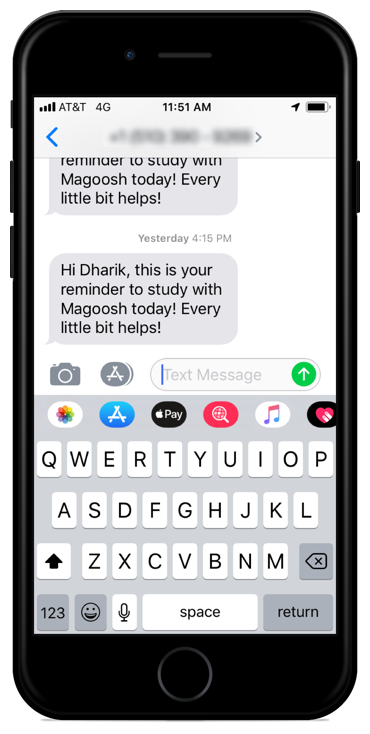
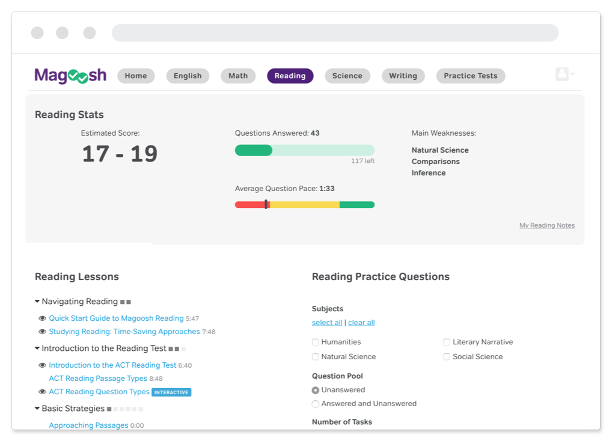

The problem
High school students have told us that they’re confused about how to start studying in our product. This means that many of them are not studying with us even after purchasing an account. Unlike our graduate student users who are independent and self-motivated, high schoolers need more guidance throughout their studies. They also need help finding time in their packed schedules to prepare for their exams. The dashboard is the first page students see when they log into their account, and this is the experience we've targeted to improve their first impressions with Magoosh.
Business goal
We worked to increase the total amount of time students spend studying in the product by 20%. Studying includes time spent viewing lessons or practicing questions.
The Team
I created the idea for this project based on student-reported challenges, designed the user interface (UX/UI), and managed the creation of the project. I worked with an ACT content expert and our team of three software engineers to develop this project.
Our Solution
Several months before this project, we ran an onboarding experiment to point out our product product features (video lessons, practice questions, and explanation review) and to explain to students how and when to use them. This experiment failed to increase product usage.
For this project, I took a more holistic approach to students’ challenge of being confused by our product and unmotivated to study. My solution was to first get students into their Magoosh accounts by helping them set up study reminders by text message. Once they were logged in, we showed them their study progress and the amount of time they had left before their exam on their dashboards to motivate them to return.
How we got there
I took inspiration from Nir Eyal’s established habit-formation model of trigger, action, reward, and investment to encourage students to develop a study habit with Magoosh.
TRIGGER: Our first hurdle was getting students to log into their account. Students admitted to putting off studying until the last minute. I also knew from our efforts to recruit students for interviews and user testing that high schoolers respond better to text messages than email. So I designed a way for students to set up text message reminders that would be sent to themselves on the days of the week that they intended to study.
ACTION: Once students were logged in, the next challenge was to make getting started more straightforward. The original dashboard had too many options including lesson videos links, practice questions by exam section, and a global navigation bar of additional pages to visit; it was hard to know what to do first. Additionally, students tend to focus on one or two exam sections per study session, so I reorganized navigation by exam section rather than by product feature. Once an exam section was chosen, the option becomes a straightforward choice of whether to learn new concepts by watching lessons or to drill practice questions. Either is a worthwhile action for students to take.
REWARD: We didn’t know exactly what would motivate our students to feel successful, so we tested several options: showing students their progress towards a long-term goal such as reaching their goal score, indicating whether they were on track towards their goal with mid-term performance indicators, and allowing them to collect points within a study session for short-term gratification. Likely rewards acting on all three timelines, long, mid, and short, will be necessary to carry students through their studies. We are tracking how students engage with the different reward elements to determine how each impacts behavior.
INVESTMENT: As students cycle through the above steps of being reminded to study, taking actions in the product, and seeing the positive result of their actions, they become more invested in studying in Magoosh to achieve their study goals.
Results
I ran this experiment as an A/B test with paying ACT students and increased their overall study activities by 30%.
I also looked at how often students studied on the days they set in their study reminders as well as how often they interacted with the mid-term progress indicators and points feature to understand the overall impact of the redesign.